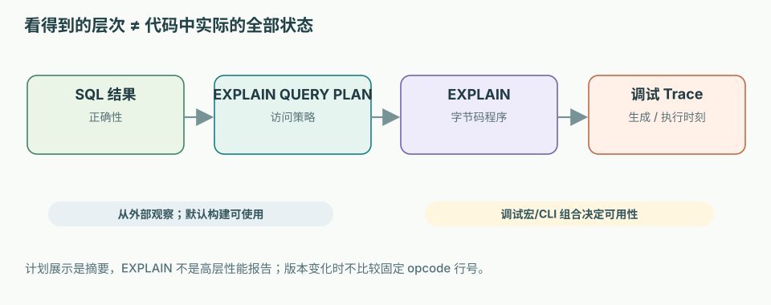
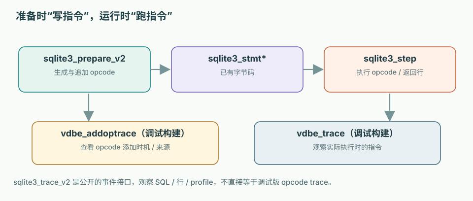
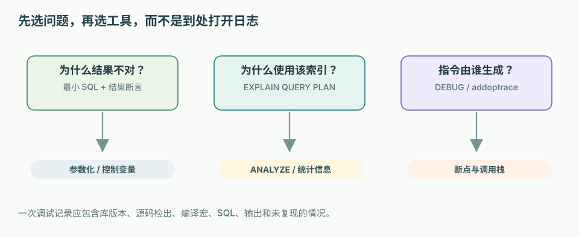

SQLite 调试实践：从 EQP 到生成期与运行期 Trace
观察一条 SQL，应该先看访问计划，还是先在 vdbe.c 设断点？将观察层次与真实执行时机分开，才能避免把调试输出误当作稳定接口。
1. 同一个 SELECT，为什么能得到四类不同输出？
为了研究 SELECT * FROM logs WHERE category='warning'，我们至少有四个问题：结果是否正确；访问了什么表/索引；执行了哪些虚拟机指令；每条指令由代码生成器在何处发出。前两项通常不需要特殊构建，后两项可能涉及调试选项和源码断点。

SQLite 官方 调试建议推荐先用 CLI 的 .eqp full 和 .echo on 观察 SQL 与计划。没有必要每次一开始就下载上游源码重新编译。只有在“为什么生成这条指令”时，才进入真正的指令生成路径。
2. 不构建源码也能用的观察工具
使用与目标环境版本尽可能接近的 sqlite3 CLI，运行以下脚本（保存为 examples/07_debug.sql）：
.echo on
.eqp full
CREATE TABLE logs(id INTEGER PRIMARY KEY, category TEXT);
INSERT INTO logs VALUES(1,'warning'),(2,'info'),(3,'warning');
SELECT * FROM logs WHERE category='warning';
CREATE INDEX logs_category ON logs(category);
SELECT * FROM logs WHERE category='warning';
.eqp off
EXPLAIN QUERY PLAN SELECT * FROM logs WHERE category='warning';.eqp 与 .echo 是 CLI 点命令，并非 SQL；不能将包含点命令的文件无修改地传给 Python sqlite3.executescript()。.eqp full 会输出较多细节，具体 opcode 和计划字符串不是 SQLite 的兼容性契约，适合对比相同构建的前后差异，而不是对跨版本输出做逐字测试。官方 EQP 文档特别说明输出格式可能变化。
最小控制变量
在执行 ANALYZE 之前与之后，查询计划可能不同；数据量、统计信息、索引以及版本都影响优化器选择。实验要记录 schema、索引、SQLite 版本和数据规模，避免把三行表的计划推广到生产数据集。
3. “生成指令”与“执行指令”相隔一次 prepare
代码生成器在 sqlite3_prepare_v2() 阶段组织 VDBE 指令；真正的 sqlite3_step() 才运行这些指令。PRAGMA vdbe_addoptrace=ON 用于跟踪新增 opcode 的时机，而 PRAGMA vdbe_trace=ON 用于跟踪执行中的指令，两者不应该混成同一种“解释执行日志”。

另外，公开 C API sqlite3_trace_v2() 提供 SQLITE_TRACE_STMT、SQLITE_TRACE_ROW、SQLITE_TRACE_PROFILE、SQLITE_TRACE_CLOSE 等事件。它能以较稳定的 API 方式观测语句和行，但不提供调试构建的完整 opcode 级跟踪。参见 trace_v2 文档。
4. 调试构建：哪些选项是必需，哪些只是可选？
SQLITE_DEBUG 会启用 SQLite 内部调试检查及若干调试用途的 PRAGMA。SQLITE_ENABLE_TREETRACE 和 SQLITE_ENABLE_WHERETRACE 则属于额外的内部调试开关，不是应用开发者必须开启的通用选项。SQLite 官方明确指出，这些追踪选项不作为稳定、公开支持的编译功能来承诺。
# 在包含 sqlite3.c、sqlite3.h、shell.c 的对应版本源码包内：
cc -O0 -g -DSQLITE_DEBUG -DSQLITE_ENABLE_TREETRACE \
-DSQLITE_ENABLE_WHERETRACE shell.c sqlite3.c \
-ldl -lpthread -lm -o sqlite3-debug
./sqlite3-debug :memory:
# 调试 CLI 中可以尝试：
# PRAGMA vdbe_addoptrace=ON;
# PRAGMA vdbe_trace=ON;
# .treetrace 0xfff
# .wheretrace 0xff
# 注意不同版本构建产物与命令可用性差异CLI 和 SQLite 核心都要在匹配开关下编译，才能使用相应的 shell 调试命令。命令无法识别不一定是用户操作错误，可能是预编译二进制缺少对应选项。官方 debugging.html还介绍了在 gdb 中用 test_breakpoint()、sqlite3ShowExpr() 等进行定点观察的方法。
5. 不依赖 SQLITE_DEBUG 的 trace_v2 小实验
独立 C 程序可通过公开 API 统计语句启动和行事件。保存为 examples/07_trace_events.c 并运行。
#include <stdio.h>
#include <sqlite3.h>
static int on_trace(unsigned type, void *ctx, void *p, void *x) {
(void)x;
int *rows = (int*)ctx;
if (type == SQLITE_TRACE_STMT) {
const char *sql = sqlite3_sql((sqlite3_stmt*)p);
printf("STMT: %s\n", sql ? sql : "(internal)");
} else if (type == SQLITE_TRACE_ROW) {
++*rows;
}
return 0;
}
int main(void) {
sqlite3 *db = NULL;
if (sqlite3_open(":memory:", &db) != SQLITE_OK) return 1;
int rows = 0;
sqlite3_trace_v2(db, SQLITE_TRACE_STMT | SQLITE_TRACE_ROW, on_trace, &rows);
int rc = sqlite3_exec(db, "SELECT 1 UNION ALL SELECT 2;", NULL, NULL, NULL);
printf("row events=%d\n", rows);
sqlite3_close(db);
return (rc == SQLITE_OK && rows == 2) ? 0 : 2;
}cc -std=c11 -Wall -Wextra -Werror examples/07_trace_events.c -lsqlite3 -o /tmp/07-trace
/tmp/07-trace该程序断言本次 SELECT 产生两次 ROW 事件。它不能证明引擎恰好执行了两个 opcode，也不能测量耗时分布；要分析耗时应另行设计重复运行、缓存控制和 profiler 方案。
6. 按问题选工具，再定位具体源文件
遇到错误答案时先缩减 SQL；遇到慢查询时先看计划；遇到 opcode 异常再去 expr.c、wherecode.c 找添加指令的位置；想看实际执行时去 vdbe.c。这是一种由可观察现象倒逼源代码阅读的顺序。

| 需要回答的问题 | 优先工具 | 下一步源码入口 |
|---|---|---|
| 为什么返回该行？ | 最小 SQL、固定数据集 | expr.c / vdbe.c |
| 为什么不是索引查找？ | EQP + ANALYZE | where.c / wherecode.c |
| 某 opcode 在哪里发出？ | debug + addoptrace + gdb | 代码生成调用栈 |
| 某指令执行了多少次？ | 调试版执行 trace / 专用性能统计 | vdbe.c |
问题驱动实验
- 先比较创建索引前后
.eqp full输出； - 从 EXPLAIN 中选择一条有意义的 opcode，查官方 opcode 说明；
- 如果有同版本 debug 构建，在对应源码中找它的发出位置；
- 记录哪个步骤经过本机验证、哪个因环境缺少 debug 产物而未执行。
自测：为什么 .eqp full 输出的指令不能当公开 ABI？
SQLite 优化器、opcode 集合、指令编号及生成算法都可能随版本变化；EXPLAIN 是诊断工具，应用程序应依赖 SQL 与公开 C API 的稳定语义。
下一章回到 prepare 链路的起点：字符如何变成 token。
来源与版本边界
以下官方资料用于核对接口、状态机和生成链。图是解释控制流的原创建模，并不意味着虚拟机 opcode、函数内部布局、日志文本及启用条件跨版本稳定。
- Hints for Debugging SQLite · SQLite 官方文档
- The SQLite Bytecode Engine · SQLite 官方文档
- Compile-time Options · SQLite 官方文档
- SQL Trace Hook · SQLite 官方文档
- EXPLAIN QUERY PLAN · SQLite 官方文档